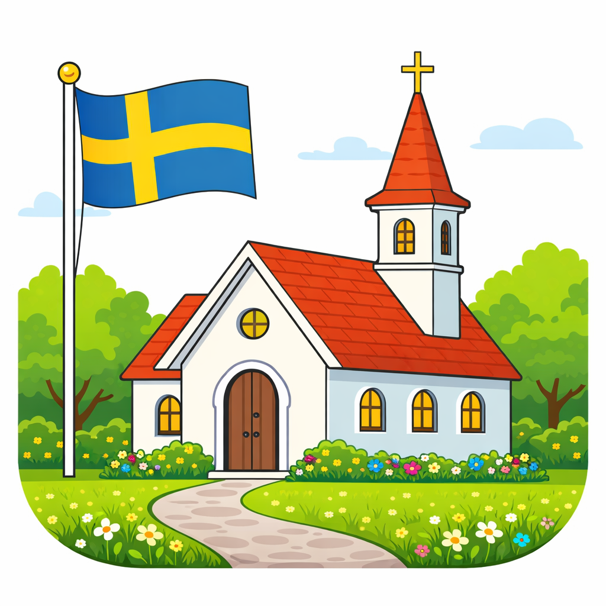

Kyrkoåret visar information om den aktuella söndagen i kyrkoåret enligt Svenska kyrkans ordning.
När du öppnar appen ser du den aktuella kyrkliga veckan med:
Tryck på kugghjulet uppe till höger för att öppna inställningar.
Notera att helgdagar börjar kl. 18 dagen före, i enlighet med kyrklig tradition.
Du kan lägga till en widget på hemskärmen via Redigera hemskärm i iOS. Widgeten finns i litet och mellanstort format och visar säsong, söndagsnamn och datum – och uppdateras automatiskt varje kväll kl. 18.
Kyrkoåret samlar inte in, lagrar eller delar någon personlig information om användaren.
Appen använder inga analysverktyg, reklamtjänster eller tredjepartstjänster som samlar in data.
Inställningar som du gör i appen (t.ex. val av söndag) lagras enbart lokalt på din enhet.
Frågor och synpunkter hanteras via projektets repo på GitHub.